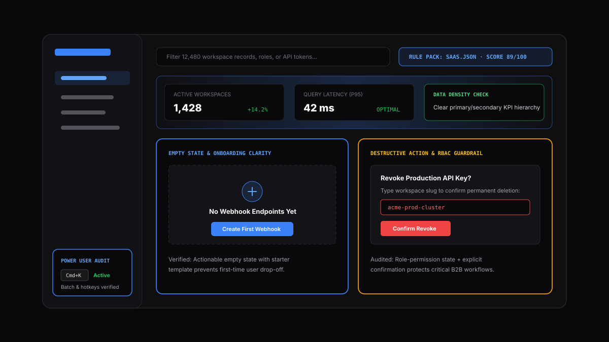

SaaS products fail on two fronts: new users churn on blank empty states during onboarding, while power users get slowed down by high-friction tables and missing shortcuts. synthux evaluates both extremes inside your live workspace.

synthux inspects how your application handles onboarding, complex data tables, asynchronous background jobs, and destructive actions.
Identifies dead-end "No data found" tables and recommends starter templates, sample data toggles, or clear primary actions that guide trial users to activation.
Evaluates KPI hierarchy, table scanability, saved filter views, multi-select batch operations, and keyboard shortcut (Cmd+K) discoverability.
Checks that disabled permission-locked controls explain why access is restricted, and verifies that API key revocation or workspace deletion requires explicit confirmation.
Empower product designers, frontend developers, and indie founders to run instant design QA.
Developers shipping React, Vue, Next.js, or Angular dashboards on localhost who want automated UX and accessibility feedback with copy-pasteable code fixes before opening a pull request.
Design teams verifying that staging implementations match design system standards, visual hierarchy rules, and cross-page navigation consistency.
Evaluates your SaaS app as an experienced daily user who demands speed, keyboard navigation, bulk editing, undo support, and zero unnecessary modal clicks.
Evaluates your dashboard as a new trial user who just signed up and needs immediate guidance on what to configure first without reading external docs.
Yes. Unlike cloud URL scanners that get blocked by login walls, synthux runs inside your active Chrome tab and audits whatever authenticated state or localhost port you have open.
Click "Copy as Markdown" or "Download PDF" in the Report tab to export an Executive Summary, P0/P1/P2 Action Plan, Annotated Screenshot, and Before/After code snippets.
100% offline, on-device UX and cognitive-load auditing via Ollama for classified C4ISR systems, defense software, and core banking intranets.
Audit fee and exchange-rate transparency, irreversible transaction guardrails, numeric input formatting, and session security indicators.
Detect cart abandonment triggers, forced account creation friction, hidden shipping costs, and product filtering gaps before release.
Combine deterministic axe-core WCAG 2.2 AA checks with AI screen-reader and keyboard-only persona evaluation and code fixes.
Simulate end-to-end user journeys across connected pages through First-Time, Power User, Accessibility, and custom domain personas.